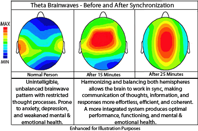

How to Find the Right Meditation Style for You
By: James
Introduction
Meditation has been practiced for thousands of years across many cultures and religions as a way to quiet the mind, reduce stress, and increase focus. With so many different types of meditation, it can be overwhelming to find the ideal one for your personal needs and preferences. Luckily, there is a meditation style for everyone, no matter their background, experience level, or lifestyle.
Meditation can be practiced in a variety of forms, from seated meditation to mindful walking to visualization techniques. Each style has unique benefits, and it is essential to explore different options to find the most effective one for you. By experimenting with different techniques, you can find a practice that resonates with your mind, body, and soul.
Meditation has been proven to have numerous health benefits, including reduced anxiety, improved sleep, and increased focus. More and more people are turning to meditation as a way to improve their mental and physical wellbeing, and with so many options available, it is easier than ever to get started on your meditation journey.
In this guide, we will explore the different types of meditation and provide helpful tips on how to find the right meditation style for you. Whether you are new to meditation or a seasoned practitioner, this guide will help you discover a meditation practice that aligns with your individual needs and preferences. So, let's get started on finding your perfect meditation match!
ad space
Mindfulness Meditation
Mindfulness Meditation: A Guide to Finding Inner Peace and Focus
Are you feeling overwhelmed and stressed out by the demands of daily life? Do you find yourself constantly distracted, unable to focus on the task at hand? If so, mindfulness meditation may be the perfect way to help you find inner peace and focus. This ancient practice has been used for centuries to help people quiet their minds and connect with the present moment.
Mindfulness meditation involves focusing your attention on the present moment and accepting it without judgment. It can be done in various ways, including sitting or walking, and can be done anywhere at any time. By practicing mindfulness meditation, you can reduce stress and anxiety, increase focus and concentration, and improve your overall well-being.
To get started with mindfulness meditation, find a comfortable and quiet place where you won't be disturbed. Sit down or lie down, close your eyes, and take a few deep breaths. Then, simply focus on your breath. Notice the sensation of the air moving in and out of your body. If your mind wanders, gently bring it back to your breath. Practice this for a few minutes every day and gradually increase the time you spend meditating.
It's important to remember that there is no right or wrong way to meditate. What works for one person may not work for another. The key is to find a style of meditation that resonates with you and makes you feel at ease. Whether it's mindfulness meditation, transcendental meditation, or another style, give it a try and see how it makes you feel.
In conclusion, mindfulness meditation is a powerful tool that can help you find inner peace and calm in a busy and chaotic world. By practicing mindfulness meditation regularly, you can improve your mental and emotional well-being and lead a happier, more fulfilling life. So take some time for yourself today and give it a try – you might be surprised at how much it can help!
ad space
Transcendental Meditation
The beauty of meditation is that there is a style for everyone. One of the most popular styles is Transcendental Meditation. Have you heard of it? Transcendental Meditation, or TM, was founded by Maharishi Mahesh Yogi in the 1950s and quickly gained popularity throughout the world.
TM is a unique form of meditation that involves the use of a mantra, or sound, that is repeated silently to help quiet the mind. The mantra is chosen specifically for each individual based on their personal characteristics and is meant to be used twice a day for 20 minutes each time.
Studies have shown that TM can have profound effects on both the body and mind. For example, a study conducted by the American Heart Association found that people who practiced TM had lower blood pressure and decreased risk of heart disease. Other research has shown that TM can help reduce stress, anxiety, and insomnia.
One of the benefits of TM is its simplicity. It doesn't require any special equipment, and it can be done anywhere, even in the comfort of your own home. Plus, it's easy to learn, with many people reporting feeling benefits after just a few sessions.
So if you're looking for a meditation style that promotes relaxation, reduces stress, and has been scientifically proven to have countless health benefits, then Transcendental Meditation might be the right choice for you.
ad space
Yoga Meditation
When it comes to finding the right meditation style, many people turn to yoga meditation, and for good reason. Yoga meditation has been practiced for thousands of years and is known for its various health benefits, including reducing stress, increasing flexibility, and improving overall wellbeing.
One of the most significant benefits of yoga meditation is its ability to promote mindfulness. Mindfulness is the practice of being fully present in the moment and is a central component of most meditation styles. Yoga meditation, in particular, focuses on linking the breath with movement, helping you stay present and focused on the task at hand.
Another great benefit of yoga meditation is its ability to reduce stress and anxiety. According to a study by the American Psychological Association, yoga meditation can reduce stress by helping to regulate the nervous system and quiet the mind.
If you're interested in trying yoga meditation, there are a few things to keep in mind. First, it's important to find an experienced instructor who can guide you through the process and ensure you are doing the postures correctly. Additionally, be sure to find a style that suits your needs and preferences. Some yoga meditation styles are more active and energetic, while others are slower and more gentle.
Ultimately, the key to finding the right meditation style for you is to experiment and explore. Try different styles and teachers until you find one that resonates with you. Remember, meditation is a personal journey, and what works for one person may not work for others.
Overall, yoga meditation is an excellent choice for those looking to reduce stress, increase mindfulness, and improve their overall wellbeing. Give it a try and see how it can benefit you!
ad space
Spiritual Meditation
Discovering Your Inner Spiritual Connection through Meditation
Meditation is a powerful practice that has been used for centuries to promote inner peace, clarity, and spiritual growth. While there are several types of meditation to choose from, spiritual meditation is a unique practice that can help you connect to a higher power, develop compassion and gratitude, and find deeper meaning in your life.
Unlike other forms of meditation, which focus on relaxation, breath work, or mindfulness, spiritual meditation emphasizes the practice of connecting with your inner self and the divine. Whether you’re a beginner or an experienced practitioner, incorporating spiritual meditation into your daily routine can help you cultivate a deeper connection with your higher self and promote a more meaningful, fulfilling life.
When it comes to finding the right meditation style for you, it’s essential to explore different practices to see what resonates with your needs and lifestyle. Some people find that guided meditations, visualization, or mantra chanting helps them to connect with their spiritual side, while others prefer silent meditation or walking meditation in nature.
Studies have shown that practicing spiritual meditation can have numerous health benefits, including reducing stress, promoting relaxation, and improving overall mental and emotional health. Plus, it can help you cultivate a deeper sense of inner peace, fulfillment, and gratitude, which can enhance all aspects of your life.
Whether you’re looking to find deeper meaning in your life, reduce stress, or develop a spiritual connection, spiritual meditation is a powerful tool to add to your mindfulness toolbox. So, take some time to explore different meditation styles, find what works best for you, and reap the rewards of a more centered, balanced, and meaningful life.
ad space
Movement Meditation
Movement Meditation: A Dynamic Path to Inner Peace
Stillness might be the first thing that comes to mind when one thinks of meditation. However, movement meditation, which involves using physical movements to achieve a meditative state, is gaining popularity for its dynamic approach to mindfulness practices. In this fast-paced world, where stress and anxiety have become commonplace, a meditative practice that involves movement or dance can be a refreshing way to disconnect from the external world and connect to our inner selves.
Movement meditation involves a range of practices, from yoga-inspired postures to free-form dance. It allows practitioners to explore and express their emotions and thoughts through movement, which can be particularly beneficial for those who find sitting meditation or guided imagery challenging.
Studies have shown that movement meditation can improve physical, mental, and emotional wellbeing. A research study conducted by the National Institutes of Health showed that movement meditation can help reduce anxiety and depression symptoms. Additionally, movement meditation is known to enhance flexibility, agility, balance, and coordination, among other physical benefits.
If you're seeking a unique approach to meditation, and are interested in exploring the dynamic practice of movement meditation, the good news is that you don't need to have a background in dance or yoga to begin. All you need is an open mind, an intention to move mindfully, and a willingness to explore movement as a way to connect with your inner self.
In conclusion, movement meditation is a dynamic and refreshing form of meditation that can help us connect with our inner selves and improve our overall well-being. Whether you're a seasoned practitioner or new to meditation, incorporating movement into your practice can add a new dimension to your mindfulness journey.
ad space
Conclusion
After exploring various meditation styles, it's clear that finding the right one for you depends on a few key factors. Firstly, consider what you hope to gain from your meditation practice. If you want to reduce stress or anxiety, a mantra-based meditation may be more effective than a movement-based one. On the other hand, if you're looking for a physical and mental workout, a more active style like Vinyasa yoga might be a better fit.
Another important consideration is your personality and learning style. If you prefer structure and guidance, a guided meditation or a teacher-led class may be more beneficial than a self-directed practice. However, if you're an independent learner and prefer to explore on your own, then a self-guided meditation may be the way to go.
Additionally, it's crucial to keep in mind any physical limitations or injuries that may affect your ability to meditate comfortably. If you have a chronic illness or injury, a more gentle style of meditation, such as Yin Yoga, may be more suitable. Always listen to your body and choose a style that feels safe and comfortable for you.
Ultimately, the most effective meditation style for you is one that you enjoy and can stick to consistently. Experiment with different styles and teachers until you find the one that resonates with you the most. Above all, remember that meditation is a personal journey, and there is no right or wrong way to practice. With patience, persistence, and an open mind, you'll find the perfect style for you and reap the numerous benefits that meditation has to offer.
ad space